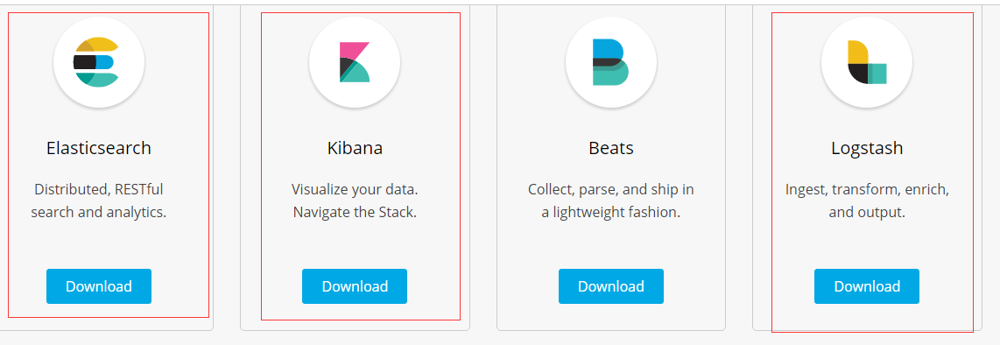
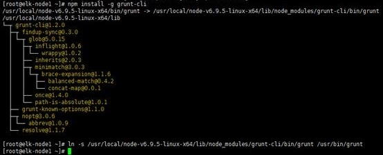
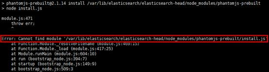
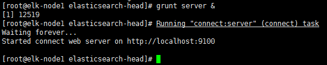
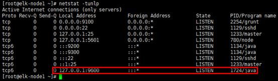
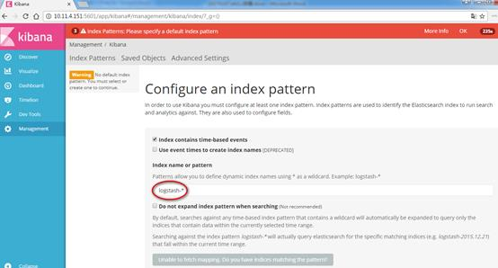
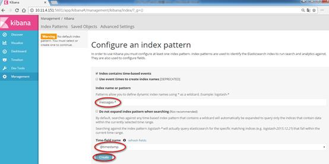

1 环境
系统：centos 7.2 x86_64 -1511
JDK: 1.8.0_111
ELK: elasticsearch kibana logstash
https://www.elastic.co/cn/downloads

2 Elasticsearch部署
下载并解压elasticsearch-5.3.2.tar.gz
1 | tar -zxvf elasticsearch-5.3.2.tar.gz -C /home/elk |
2.1 配置elasticsearch.yml
1 | [root@elk-node1 src]# cat /etc/elasticsearch/elasticsearch.yml | grep -v “#” |
1 | cluster.name: elk #自定义集群名，相同集群内的节点设置相同的集群名 |
2.2 配置head插件
2.2.1 下载并配置nodejs
nodejs官网：https://nodejs.org/en/
1 | [root@elk-node1 ~]# cd /home/elk |
2.2.2 安装head插件
安装grunt
1 | [root@elk-node1 ~]# npm install -g grunt-cli |

#
grunt是一个方便的构建工具，可以进行打包压缩、测试、执行等等的工作，5.x里的head插件就是通过grunt启动的；#”
-g”参数代表全局安装，一般安装到nodejs的”lib/node_modules”目录下；不带参数”-g”，则是本地安装，一般安装到运行npm命令时所在的目录，这里就需要安装到head插件目录；#为
grunt命令建软链接，方便全局执行，或加入环境变量；；#如果镜像速度不理想，可提前切到国内的镜像，在安装
grunt-cli前执行：npm config set registry https://registry.npm.taobao.org。
2.2.3 下载并配置head
1 | [root@elk-node1 ~]# cd /home/elk/elasticsearch |
#配置
elasticsearch.yml文件允许head插件跨域访问es，请见上述章节。

2.2.4 安装head
1 | [root@elk-node1 ~]# cd /var/lib/elasticsearch/elasticsearch-head/ |


# 安装完成后可能有一些报错，不影响使用，报错原因未知，本人对nodejs不了解，github上有相近的问题，但并未解决。解决方法如下：
(1) 查看报错信息”Error: Cannot find module ‘/var/lib/elasticsearch/elasticsearch-head/node_modules/phantomjs-prebuilt/install.js’”，未找到” phantomjs-prebuilt/install.js”文件；
(2) 采取比较土的办法，将完整的”phantomjs-prebuilt/”目录上传到相应位置，重新执行”npm install”，无报错。
# 同时有3个警告信息，忽略即可，其中“npm WARN elasticsearch-head@0.0.0 license should be a valid SPDX license expression”警告信息可做如下处理：
http://www.itdadao.com/articles/c15a1031952p0.html
即修改”./elasticsearch-head”目录下“package.json”文件第17行的””Apache2“ “为”Apache-2.0“，涉及到开源软件与其他合作类软件的使用声明。
# 如果没有全局安装grunt二进制程序，可在”elasticsearch-head”目录下执行”npm install grunt --save“或” npm install grunt-cli“。
2.2.5 配置app.js和Guuntfile.js
1 | [root@elk-node1 ~]# cd /home/elk/elasticsearch-5.3.2/elasticsearch-head/ |

#在4328行将原”http://localhost:9200“修改为”http://172.20.20.29:9200“，否则head插件不能获取节点状态信息。
1 | [root@elk-node1 ~]# cd /home/elk/elasticsearch-5.3.2/elasticsearch-head/ |

#在93行新增”hostname: 0.0.0.0’, “，确保能被访问。
2.3 启动并验证
- 创建elk用户
- 使用
elk用户启动elasticsearch
1 | su - elk -c "/home/elk/elasticsearch-5.3.2/bin/elasticsearch &" |
- 启动head
1 | cd /home/elk/elasticsearch-5.3.2/elasticsearch-head/ |

#启动head插件，需要到head目录下


3 Logstash部署
3.1 下载logstash
下载logstash-5.3.2
1 | tar -zxvf logstash-5.3.2 -C /home/elk |
3.2 配置logstahs
3.2.1 配置文件
默认配置文件： /home/elk/logstash-5.3.2/config/logstash.yml
1 | [root@elk-node1 ~]# cd /etc/logstash/ |
*#其中默认配置已经明确数据，日志，logstash pipeline实例文件的存储位置，保持默认即可；
#其中“http.host”参数指定数据输入主机，默认为localhost；“http.port”参数指定数据输入端口，默认为9600～9700（每实例占用1个），此验证暂时不做变更*
3.2.2 pipeline文件
根据默认配置，pipeline实例文件默认应放置于/home/elk/logstash-5.3.2/config/目录，此时目录下无实例文件，可根据实际情况新建实例，以处理本机log信息为例，如下：
1 | [root@elk-node1 config]# vim messages.conf |
*#pipeline
#pipeline实例文件以”input”，”output”，”filter”等区域组成，前两者为必选项；
#”input”与”output”利用插件进行数据输入与输出，如这里”file”即输入插件，“elasticseach”与“stdout”即输出插件；
#在各插件内再具体定义行为，如”input”定义了数据源，“elasticseach”定义了输出节点与数据输出的索引与格式；
#“codec => rubydebug”会产生大量的debug文件至message（也可重定向到其他位置），此处注释掉；
#请注意权限，这里message常规权限是400，logstash无法读取，如果无法调用，在logstash的启动日志中会有相应的记录。*
3.3 启动并验证
1 | [root@elk-node1 ~]# /home/elk/logstash-5.3.2/bin/logstash -f /home/elk/logstash-5.3.2/conf.d/messages.conf & |
& 是在后台启动
1 | [root@elk-node1 ~]# netstat -tunlp |


4 Kibana部署
4.1 解压下载的kibana
1 | tar -zxvf kibana-5.3.2-linux-x86_64.tar.gz -C /home/elk |
4.2 配置kibana
1 | [root@elk-node1 ~] |
4.3 启动并验证
1 | /home/elk/kibana-5.3.2-linux-x86_64/bin/kibana & |
& 在后台启动
1 | netstat -tunlp | grep 5601 |
4.4 kibana展示
浏览器访问：http://172.20.20.29:5601

需要在“Index name or pattern”处创建索引名，elassticsearch中并没有以”logstash-*”命名的索引，则不能创建，新建索引对应logstash的pipeline输出插件定义的”index”，即”messages-*”，如下：

在“Index name or pattern”处填写入正确的索引名字，”@timestamp”会自动填充，点击”create”创建，见到如下界面即索引创建完成；
在“Discover”页面，可以搜索与浏览Elasticsearch中的数据，默认搜索的是最近15分钟的数据，可以自定义选择时间。